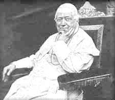

Pope Benedict XVI, when meeting the new ambassador of the Philippines to the Holy See on October 27th, 2008, made this amazing statement regarding church and state:
"The Catholic Church is eager to share the richness of the Gospel’s social message, for it enlivens hearts with a hope for the fulfillment of justice and a love that makes all men and women truly brothers and sisters in Christ Jesus," the Pontiff stated. "She carries out this mission fully aware of the respective autonomy and competence of Church and State. Indeed, we may say that the distinction between religion and politics is a specific achievement of Christianity and one of its fundamental historical and cultural contributions." — Zenit. (full text of the Pope's remarks)
What makes this so remarkable? Note that the pontiff was meeting with an ambassador to the Holy See. This is because Benedict XVI is the head of the papal state (the king or monarch of the Holy See). At the same time he holds the highest ecclesiastical office in the Roman Catholic Church, that of Pope. This makes the Vatican the epitome of church and state combined.
Relatively recent events in some countries of the world have also given the Catholic Church the opportunity to give the appearance of being the champion of religious freedom. For example, the Catholic Church has officially protested the new legislation in Russia that is designed to restrict the freedom of some religious groups. And in Cuba, the communist government of Fidel Castro permitted the celebration of Christmas in 1997, for the first time in many years, as a concession to the impending papal visit.
Catholics can even point to Pope John Paul II's
 Angelus Message
of February 18, 1996 or to Vatican II's Declaration On
Religious Freedom,
Angelus Message
of February 18, 1996 or to Vatican II's Declaration On
Religious Freedom,  Dignitatis
Humanae, promulgated by Pope Paul VI on December 7, 1965, as
proof that the Catholic Church staunchly supports religious freedom. When Catholics and Catholicism are the subject of repression and
persecution, as they have been in Communist states during the 20th century,
you can be assured that they will champion religious freedom. But has this
also been the case when Catholicism has been the dominant religion, in a
position to exert her influence, and even persecute what they call "heretics"
via the secular authorities? What has been the historical position of the
Catholic Church on religious freedom and the separation of church and state?
Dignitatis
Humanae, promulgated by Pope Paul VI on December 7, 1965, as
proof that the Catholic Church staunchly supports religious freedom. When Catholics and Catholicism are the subject of repression and
persecution, as they have been in Communist states during the 20th century,
you can be assured that they will champion religious freedom. But has this
also been the case when Catholicism has been the dominant religion, in a
position to exert her influence, and even persecute what they call "heretics"
via the secular authorities? What has been the historical position of the
Catholic Church on religious freedom and the separation of church and state?
Cum ex Officii Nostri
Pope Innocent III, 1207
We decree as a perpetual law, that whatsoever heretic ... shall be found therein, shall immediately be taken and delivered to the secular court to be punished according to the law. All his goods also shall be sold ... The house, however, in which a heretic has been received shall be altogether destroyed, nor shall anyone presume to rebuild it; but let that which was a den of iniquity become a receptacle of filth.
Source: Rome Has Spoken, edited by Maureen Fiedler and Linda Rabben, Copyright 1998 by The Quixote Center/Catholics Speak Out, published by The Crossroad Publishing Company, 370 Lexington Avenue, New York, NY 10017, ISBN 0-8245-1774-1, pg. 47.
Quanta Cura
Encyclical of Pope Pius IX promulgated on December 8, 1864
From section #3:
|
 |
|
Pius IX Pontifex Maximus |
Pius IX is advocating in the above passage that society should be governed in such as way as to discriminate between the "true religion" (Catholicism) and "false religion" (all non-Catholics). Pius IX continues:
And, against the doctrine of Scripture, of the Church, and of the Holy Fathers, they do not hesitate to assert that "that is the best condition of civil society, in which no duty is recognized, as attached to the civil power, of restraining by enacted penalties, offenders against the Catholic religion, except so far as public peace may require."
So heretics, according to Pius IX, maintain that the Catholic Church has no right to compel secular civil authorities to arrest and prosecute anti-Catholic protesters, with the exception of instances of public disorder. In short, heretics advocate religious freedom.
Now Pius IX clarifies his view further:
From which totally false idea of social government they do not fear to foster that erroneous opinion, most fatal in its effects on the Catholic Church and the salvation of souls, called by Our Predecessor, Gregory XVI, an "insanity,"* [2] viz., that "liberty of conscience and worship is each man's personal right, which ought to be legally proclaimed and asserted in every rightly constituted society; and that a right resides in the citizens to an absolute liberty, which should be restrained by no authority whether ecclesiastical or civil, whereby they may be able openly and publicly to manifest and declare any of their ideas whatever, either by word of mouth, by the press, or in any other way."
2. Gregory XVI, encyclical epistle "Mirari vos," 15 August 1832.
The assertion has just been made by two Popes that the concepts of religious liberty and freedom of speech are nothing less than "insanity", and that Catholic and civil authorities have the right to restrict and abolish all rights of anyone who is not Catholic. He also considers such principles of liberty as fatal blows to the Catholic faith, that the Catholic faith cannot survive in an atmosphere of freedom, but rather only by resorting to repression and persecution as directed by the Church.
But, while they rashly affirm this, they do not think and consider that they are preaching "liberty of perdition;"[3] and that "if human arguments are always allowed free room for discussion, there will never be wanting men who will dare to resist truth, and to trust in the flowing speech of human wisdom; whereas we know, from the very teaching of our Lord Jesus Christ, how carefully Christian faith and wisdom should avoid this most injurious babbling."[4]
3. St. Augustine, epistle 105 (166).
4. St. Leo, epistle 14 (133), sect. 2, edit. Ball.
Religious liberty is equated here with lawlessness and chaos (perdition). What is advocated here is nothing less than the abolishing of freedom of religion and freedom of speech.
*It is interesting to note that in Quanta Cura, Pope Pius IX makes a point
of quoting Pope Gregory XVI as using the word "insanity" in describing the
principle of religious liberty in Mirari vos, yet if you check
Mirari vos at Catholic sources on the web, you will discover the word has
been removed from the text. I offer the translation of  Mirari vos
at EWTN as one example of this kind of politically correct historical
revisionism that attempts to take the edge off past papal remarks and make
them appear more palatable. Here is an apparently more accurate translation of
what Gregory XVI actually said in section 14 of Mirari vos, and below
it is what EWTN's version says:
Mirari vos
at EWTN as one example of this kind of politically correct historical
revisionism that attempts to take the edge off past papal remarks and make
them appear more palatable. Here is an apparently more accurate translation of
what Gregory XVI actually said in section 14 of Mirari vos, and below
it is what EWTN's version says:
14. And from this most putrid font of indifferentism flows that absurd and erroneous view, or rather insanity, that liberty of conscience should be asserted and claimed for just anyone.
[EWTN] 14. This shameful font of indifferentism gives rise to that absurd and erroneous proposition which claims that liberty of conscience must be maintained for everyone.
If the Catholics cannot present their own history faithfully, then how can anything they say be considered trustworthy? They claim to be the sole authority for interpreting scripture, yet apparently cannot even translate their papal documents accurately. Perhaps Catholic translations of papal encyclicals should be considered as "edited for political correctness" until other sources are consulted.
Released at the same time as the encyclical Quanta Cura, Pius IX issued a list or Syllabus of Errors. The following statements are from that syllabus and are condemned as being in error:
15. Every man is free to embrace and profess that religion which, guided by the light of reason, he shall consider true.-- Allocution Maxima quidem, June 9, 1862; Damnatio Multiplices inter, June 10, 1851.
16. Man may, in the observance of any religion whatever, find the way of eternal salvation, and arrive at eternal salvation.-- Encyclical Qui pluribus, Nov. 9, 1846.
17. Good hope at least is to be entertained of the eternal salvation of all those who are not at all in the true Church of Christ.--Encyclical Quanto conficiamur, Aug. 10, 1863, etc.
18. Protestantism is nothing more than another form of the same true Christian religion, in which form it is given to please God equally as in the Catholic Church.--Encyclical Noscitis, Dec. 8, 1849.
24. The Church has not the power of using force, nor has she any temporal power, direct or indirect.—Apostolic Letter "Ad Apostolicae," Aug. 22, 1851.
55. The Church ought to be separated from the State, and the State from the Church.--Allocution Acerbissimum, Sept. 27, 1852.
Because the above are errors, Pius IX is actually saying:
15. No man is entitled to freedom of religion.
16-18. Salvation is found only in the Catholic Church, and not in any other denomination, to include Protestantism.
24. The Catholic Church may employ force to achieve her ends.
55. Church and State should be united as one.
 Quanta Cura
and the Syllabus
of Errors online.
Quanta Cura
and the Syllabus
of Errors online.
Excerpts from LIBERTAS PRAESTANTISSIMUM
ON THE NATURE OF HUMAN LIBERTY
ENCYCLICAL OF POPE LEO XIII JUNE 20, 1888
23. We must now consider briefly liberty of speech, and liberty of the press. It is hardly necessary to say that there can be no such right as this, if it be not used in moderation, and if it pass beyond the bounds and end of all true liberty. For right is a moral power which -- as We have before said and must again and again repeat -- it is absurd to suppose that nature has accorded indifferently to truth and falsehood, to justice and injustice. Men have a right freely and prudently to propagate throughout the State what things soever are true and honorable, so that as many as possible may possess them; but lying opinions, than which no mental plague is greater, and vices which corrupt the heart and moral life should be diligently repressed by public authority, lest they insidiously work the ruin of the State.
So, just who do you think Pope Leo XIII believes has the right and authority to regulate both speech and the press to assure that only "the truth" is presented?
27. In faith and in the teaching of morality, God Himself made the Church a partaker of His divine authority, and through His heavenly gift she cannot be deceived. She is therefore the greatest and most reliable teacher of mankind, and in her swells an inviolable right to teach them. Sustained by the truth received from her divine Founder, the Church has ever sought to fulfill holily the mission entrusted to her by God; unconquered by the difficulties on all sides surrounding her, she has never ceased to assert her liberty of teaching, and in this way the wretched superstition of paganism being dispelled, the wide world was renewed unto Christian wisdom. Now, reason itself clearly teaches that the truths of divine revelation and those of nature cannot really be opposed to one another, and that whatever is at variance with them must necessarily be false. Therefore, the divine teaching of the Church, so far from being an obstacle to the pursuit of learning and the progress of science, or in any way retarding the advance of civilization, in reality brings to them the sure guidance of shining light. And for the same reason it is of no small advantage for the perfecting of human liberty, since our Savior Jesus Christ has said that by truth is man made free: "You shall know the truth, and the truth shall make you free." [Jn 8:32] Therefore, there is no reason why genuine liberty should grow indignant, or true science feel aggrieved, at having to bear the just and necessary restraint of laws by which, in the judgment of the Church and of reason itself, human teaching has to be controlled.
Note that Pope Leo XIII is saying that the Catholic Church should be the judge of which laws are appropriate to restrain human liberty. The ultimate result of this is governmental persecution of heretics pointed out by church authorities, as amply demonstrated by European and Catholic history.
42. From what has been said it follows that it is quite unlawful to demand, to defend, or to grant unconditional freedom of thought, of speech, or writing, or of worship, as if these were so many rights given by nature to man. For, if nature had really granted them, it would be lawful to refuse obedience to God, and there would be no restraint on human liberty. It likewise follows that freedom in these things may be tolerated wherever there is just cause, but only with such moderation as will prevent its degenerating into license and excess. And, where such liberties are in use, men should employ them in doing good, and should estimate them as the Church does; for liberty is to be regarded as legitimate in so far only as it affords greater facility for doing good, but no farther.
Here is  LIBERTAS PRAESTANTISSIMUM online at the Vatican.
LIBERTAS PRAESTANTISSIMUM online at the Vatican.
Excerpts from VEHEMENTER NOS
On the French Law of Separation,
Encyclical of Pope Pius X promulgated on February 11, 1906.
3. That the State must be separated from the Church is a thesis absolutely false, a most pernicious error. Based, as it is, on the principle that the State must not recognize any religious cult, it is in the first place guilty of a great injustice to God; ... Hence the Roman Pontiffs have never ceased, as circumstances required, to refute and condemn the doctrine of the separation of Church and State. ...
Here is  VEHEMENTER NOS online at the Vatican.
VEHEMENTER NOS online at the Vatican.